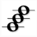
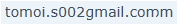

はじめに

このソフトウェアは、分散発音記述を生成するプロセッサーです。
分散発音は、シンセキーボードではポピュラーな演奏表現で、1発音毎に空いている音源を使用して演奏します。
これをシミュレートする記述を生成し、減衰や残響の過程が含まれる、より豊かな演奏表現を実現します。
できること
一部の機能を除き、特定のドライバに依存しない形で分散発音記述を生成します。
.Net Framework2レベルの環境で動作し、以下の機能を持ちます。
- 単音のMMLを入力すると、分散発音可能なMMLを生成する
- タイピングにより内容が生成され、任意に発音数の変更が可能
- MML内容の追加削除に対し高速に追従
- タイピング、貼り付け、ドロップなどの入力に対応し、結果はクリップボードへ即時反映(ON/OFF可能)
- ドライバの書式に合わせた行ヘッダの生成または任意入力をサポート(仮)
- コマンドライン生成時はファイルへ出力可能
もし分散発音を手で入力した経験のある方であれば、2と3については、え、まさかね、と思いがちですが、それを実現しています。
手入力による生成では、わずかな修正で全域が書き直しになる場合もあり、例えば作成中に発音数を変えることは困難でした。
このツールでは生成量に依存はありますが、実用的な範囲のものであればほぼ一瞬で生成が完了します。
また、MMLの先頭や入力途中の追加削除にも追従します。
(手作業ではこのような編集は事実上不可能でした。)
MML入力エリアでBackSpaceやDelなどを押した時の動きを見ると、その速度を実感できるかもしれません。
入力行数が増えると若干レスポンスは下がりますが、それでも非常に高速です。
少ないタイプとクリックで必要な結果が得られ、データの再利用が容易になっています。
分散発音とは
分散発音を書いたことがない方のために、作成される内容を簡単に説明します。
発音に必要なトラックを確保し、1発音ごとにトラックを切り替え、発音されないトラックにはすべて休符を設定します。
残響を除き、アクティブに発音されるトラックは1つです。
若干残響のある音色を使用することがポイントになりますが、既存の音色をうまくアレンジしてみてください。
このように設定することで、シンセキーボードの発音に近い、過渡的な音の表情を活かした発音を行うことができます。
(本物は空きのチャネルを見つけて発音しますが、そこまでは模倣せず、発音ごとに次のトラックに切り替えることで処理を単純化し、記述に汎用性を持たせています。)
入力したMMLは次のように変換されます。
-----------
cde
-----------
という単音のMMLを入力した場合、発音数を3に設定した場合は
-----------
crr
rdr
rre
-----------
のように、複数のパートに展開されます。
発音数を4として、
"l4 o5 a>c+ea&a&a"
といったチャイム的な音を表す場合、その表記は
------------------------------------
l4 o5 a>r rr r r
l4 o5 r>c+rr r r
l4 o5 r>r er r r
l4 o5 r>r ra&a&a
------------------------------------
となります。
ここまでの説明で表現が通じるのであれば、おそらくこのツールに価値を見出せるかと思います。
ちなみに、すべての休符を取り除いた表記は
------------------------------------
l4 o5 a>
l4 o5 >c+
l4 o5 > e
l4 o5 > a&a&a
------------------------------------
となり、実際に1発音毎にスライドしているだけの処理であることがわかると思います。
…ですが、この規則に従ってちょっとした曲を入力しようとすると、軽く死ねるタイピング量になってしまいます。
(PC-88を使っていた当時はそれでもやりつづけましたが…)
作る前にざっと探してみましたが、現在の音源ドライバではこれに直接的対応しているものが見あたらないため、
むしろ、ドライバが対応しなくても実現してしまおう(やってやるぜ！)
というつもりで作成しています。
※もし、すでにサポートしているドライバをご存じであればぜひお知らせください。
発音サンプル
例として、次のフレーズを聴き比べてみてください。
1.無加工の音 , FMP7用ソース *先にこちらから聴くとわかりやすくなります。
2.分散発音記述を行った音 , FMP7用ソース
*サンプルの音程が変わっていることに気づきました。時間を見て修正予定です。
発音サンプルの解説
1.は分散発音部を単音で演奏しています。音色から想像される、ありがちな音がします。
デモなのでやや意図的ですが、やや安っぽいというか、長く聞きたいと感じる音ではないですね。
2.は、1をこのツールを使用して分散発音化したものです。
音色を含めて同じものですが、エフェクタでも入れたのでは?と感じられる音になります。
上記のサンプルフレーズの生成にはFMP7というドライバを使用しています。
このドライバは優れた能力を持ち、多チャンネルの発音が可能なため、最終的な発音数は若干多めに確保しています。
以前のPCの音源を鳴らす場合には、より厳しい発音数の制約があるため、発音数は2～4程度が無難ですが、
技術的には発音数2から効果が得られますので、音源数に合わせて柔軟にスケールすることができます。
*発音数とは、分散発音に使用するトラック(パート)数を示すものです。
対象のトラックが複数の音源に割り当てられている場合には、その係数分の音源が使用されます。
発音数の残りにご注意ください。
制限事項
このツールでは、以下のことはできません。
- MMLの文法エラーを指摘しません
MMLコンパイラではないので、分散発音化に必要な内容以外はスキャンしません。
エラーのあるMMLや、生成結果がエラーになる内容を記載しても、そのまま生成します。
変だな?と思ったら、まず、元のMMLが正常に演奏できるか確認してください。
- ドライバの仕様上、1パート(トラック)に1つしか置けない指定を書いた場合、正しく演奏されない場合があります
このツールの分散発音化処理では、音階として認識されない要素は全てのパートに複製されます。
たとえば、トラックに一つしか置けないものが書かれていると、エラーの原因になるか、正しく演奏されない可能性があります。
そのような指定があることがわかっている場合は、それより前方に記述するか、生成後に手動で埋め込んでください。
- ループ記述を処理する場合、ループ中の処理・出口と分散発音の処理位置は同期しません
ループ記述は、関連する記号を含めて複製されます。
このため、演奏自体は指定通りに行われますが、ループ中・脱出時に分散発音の位置が同期しなくなることがあります。
実際の生成結果を見ていただくとイメージしやすいと思いますが、音色と状態によっては、聴感上分かる程度に残響の途切れが発生する可能性があります。
発音数が3より多い場合は、ループ脱出時の音を少し長く発音することで違和感を少なくすることができます。
発音数が3より少ない場合は、音色とパート構成によりますが、それ以外のパートの発声を工夫することでカバーできる場合があります。
根本的にこの問題を回避したい場合は、ループを事前に展開することをお勧めします。
以上の制限・制約がありますが、基本的にはこのぐらいです。
うまく鳴らない場合は cdefg 程度のとりあえず鳴るものを作り、雰囲気をつかんでみてください。
ダウンロード
以下のプログラムがダウンロード可能です。
現在は、.NET Framework 2版のみが作成されています。
*コマンドライン専用版と.NET Framework 4版については作成予定です。
現在.NET Framework2を入れていないか、4のみ入れていて動作しないという方は、3.51(3.5 SP1)をインストールするか、Windowsの機能から3.5を有効にしてください。
どうしても環境を変更できない場合、ご連絡いただければ、製作の優先順位の参考にします。
・Microsoft .NET Framework 2
GUI版
ダウンロード(Vector) ←これ
コマンドライン専用版
(作成中)
・Microsoft .NET Framework 4 (予定)
GUI版(作成中)
コマンドライン専用版(作成中)
注意事項
分散発音を効果的に作成する上での注意点を記載します。
発音数の設定値は、音源数が多い環境では、値を増やすだけで表現が向上する場合があります。
しかし、効果に関する要素はそれだけではありません。
特性をつかまないまま量を増やすと、トラックや音源を過剰に占有し、期待する効果が出ないこともあります。
既存曲に組み込む場合については、できるだけ少ない設定値の状態で一度演奏してみることをお勧めします。
最小限の発音数で無理なく聞こえる設定をつかむと、発音数に制約のある音源を使う場合でも、効果を無理なく楽しめるようになります。
現在、このプログラムは開発中のような気がしていますが、作者の性格上かなり放置中です。
予期せぬエラーに遭遇した場合や、機能面についてお気づきの点がありましたら、(できれば)具体的な症状やスクリーンショット、再現に必要なテキストを添えて、後述の連絡先までお知らせを頂ければ幸いです。
認識する文字列の一覧・規則
このツールは、音階データが以下の順序で書かれていることを期待しています。
これは、MMLとしては特別な制約ではないと考えています。
もし内容に疑問があればお知らせください。
- 音階として認識される文字列
例： cdefgabCDEFGAB
MMLが主に英音階なので、これに合わせています。 - シャープ・フラット記号
例：+ または - - 音長 (音の長さ)を示す任意長の数字(付点は後述の全パートコピー対象文字列となり、別扱いです。)
例：c4. c32 c30000 c8.. - 音階と音長間の任意の空白、およびその他の任意の空白の挿入は許容される
この例に当てはまらないものとしては、音階の絶対値指定などが考えられますが、これらは安定版を作ってから対応したいと思います。
音階以外に特別に処理を行う文字列として、タイ記号 & と ^ があります。
^のあとに音長が来るか音階が来るかは線引きが微妙なため、後にモード化する予定です。
以上です。
これ以外の文字列は、分散発音に関与しないものとして各パートに単純に複製されます。
例えば、オクターブ上下記号は書いたまま複製されますので、結果的にドライバ側のオクターブの解釈に依存しません。
この、音階以外の内容を単純に複製する機能によって、ある程度の表記の多様性をカバーしています。
- 各項目の基準について
- 「音階」として認識する文字列の基準
いわゆるMMLとして認知されている音階(小文字 cdefgab , 大文字 CDEFGAB )を採用しています。
ドライバにより大・小文字音階の一方しか認識しない場合がありますので、演奏可能なものを使ってください。 - 「シャープ・フラット記号」について
「ダブルシャープ」や「ナチュラル」を指定可能なドライバがあります
現在は固有表記とみなして対応していませんが、需要が多い場合は可能な限り対応したいと思います。 - 音長について
数字であれば内容は問いません。100000などと書いてもOKです。(カウンタ指定を考慮しています。) - 符点(ピリオド)は休符表現にもコピーされなければ効果がないので、全てのパートに複製されます。
- 「音階」として認識する文字列の基準
その他、なるべくMML製作者の意図・思考を阻害しない方向で記載できるようにしていますが、現在のところは汎用性の高い記載に限って処理しています。
現時点では、下記のような記述を想定しています。
------------------------------------
cdefg
cf+a
c 1c2 c 3
c+1f+2a3
c d e
c+1 d-2 e3
CDEFG
CF+A
C1C2C3
------------------------------------
実際にはこれより幅広い記述に対応できますが、基本的には特別な処理は入れていません。
変換結果について、「(MMLとして)常識的なものが正しく変換されない」問題がある場合は対処したいと考えています。
ただし、その内容が「制限事項」で述べたものに該当する場合は、ご期待に添えないことがあります。予めご了承ください。
{kind=link}
動作環境
このツールは、次の環境で動作します。
・Microsoft .NET Framework 2版
Microsoft .NET Framework 2.0 または互換環境(*)
・Microsoft .NET Framework 4版(予定)
Microsoft .NET Framework 4.0 または互換環境
*互換環境での動作を保証するものではありません。
作成されたデータの演奏には、英音階(c～b)をサポートしたMML演奏環境が必要です。
適切な演奏効果を得るためには、適宜減衰・残響が設定された音色が必要となります。
おわりに/連絡先
分散発音ジェネレータ ソフトウェアは、フリーソフトです。
再配布する場合、最低限の実費以外の制約を付けないでください。
使用について制約は設けていませんが、使用した結果、いかなる損害が発生しても責任を負いません。
また、何らかの理由で使用することができなかった場合も同じです。
連絡先は以下の通りです。
email:

友井 純夫(ともいすみお)宛
Twitter:
@Tomoi_S
※emailアドレスはspam/OCRの対策をしています。お手数ですが過不足を補い、Gmailで通る内容に書きなおしてください。
開発履歴 / 謝辞
開発履歴
0.4.0.0 2014.03.02 複数行MMLに対応、生成を高速化。(公開版)
*0.4.0.0から横800ドット環境(タブレット縦持ち時に多い解像度)に対応
ベータ版
0.3.4.0 2013.11.20 オリジナルMMLの同時出力対応、U/Iの再整理。
0.3.0.0 2012.07.29 詳細修正・コマンドライン処理部を作成。(公開版)
0.2.0.0 2012.07.22 公開を前提としたU/Iを作成し、仮レイアウトを構成。
0.1.0.0 2012.06.20 エンジン部を組み込んだ最初期版。
プロトタイプ
正規表現の音階判別式と128分散発音の生成式のみ。
謝辞
FMP7のリリースを契機に再びMMLを書くようになり、その昔に書いた分散発音の音源を編集しようとした時に、
「今だったらこれを簡単に書けるようになるかも…」
と思い、このツールを作成することになりました。
ターゲットは引き続き汎用としていますが、FMP7に出会ったことで、この発音技術についてもう一度考える機会ができたこと、
他の方にも便利に使っていただける可能性があると感じ、U/Iを整備するきっかけとなりましたので、深く感謝しています。
使用したツール
プログラム … Visual Studio 2010,2013 (2010互換プロジェクト)
アイコン生成 … IcoFX1.6
サイトデザイン … Artisteer2 テンプレート出力後、手編集